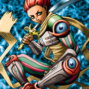

Dimensional Warrior

Description: "Monsters destroyed in battles against Dimensional Warrior cannot be revived once they are sent to the Graveyard."
STATS
ATK: 1200
DEF: 1000DECK COST
Deck Cost per Card: 27EFFECT NOT IMPLEMENTED
Fusion List (4 Possible Fusions)
- Dimensional Warrior + Fire Eye = Flame Swordsman
- Dimensional Warrior + The Judgement Hand = Judge Man
- Dimensional Warrior + Skelgon = Sword Arm of Dragon
- Dimensional Warrior + Wicked Dragon with the Ersatz Head = D. Human